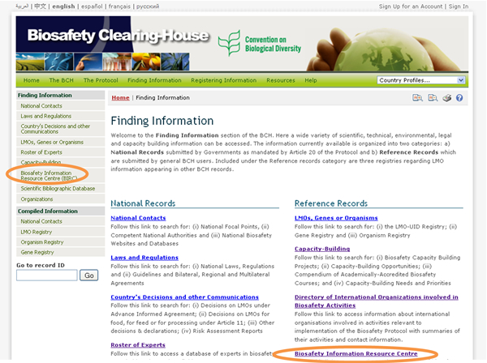
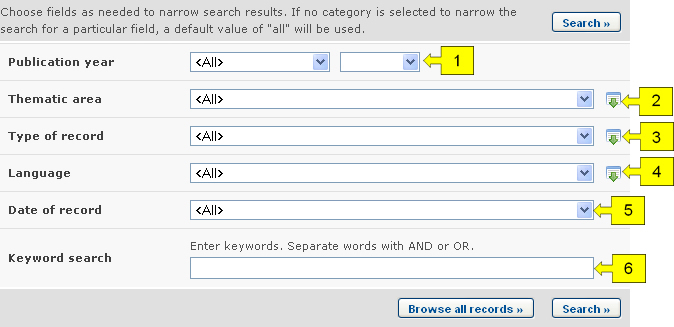
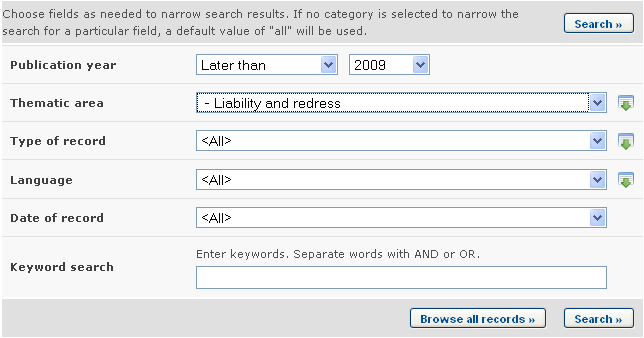

URL: http://bch.cbd.int/database/resources/
El Artículo 20 del Protocolo de Cartagena establece el CIISB para facilitar el intercambio de información y experiencia con OVM entre las Partes, de tal forma que preste asistencia a las mismas en la implementación del Protocolo. Para ayudar a cumplir con esta misión el CIISB contiene información proporcionada por las Partes, gobiernos y organizaciones que es relevante para la bioseguridad y la implementación del Protocolo.
El Centro de Recursos de Información en Bioseguridad (CRIB) contiene catálogos electrónicos de publicaciones relativas a bioseguridad y recursos de información para legisladores, educadores, investigadores y el público en general. Los registros del CRIB pueden ser registrados por cualquier usuario que tenga una cuenta en el CIISB.
La página de búsqueda para el CRIB puede ser accedida desde el menú desplegable Búsqueda de Información localizado en la barra de navegación, o el menú ubicado en la barra izquierda de la página Búsqueda de Información.

Estos vínculos facilitan a los usuarios el acceso a catálogos electrónicos de publicaciones relacionadas con bioseguridad y otros recursos de información que incluyen:
1. Servicios de noticias (incluyendo la lista de correos electrónicos);
2. Bases de datos en línea y motores de búsqueda;
3. Informes y casos de estudio;
4. Revistas;
5. Boletines;
6. Materiales educativos (manuales, herramientas de ayuda y presentaciones);
En la página del Centro de Recursos de Información sobre Bioseguridad (CRIB) hay varios campos de criterios de búsqueda:
-
Año de publicación: Lista de selección para acotar resultados según su año de publicación. La primer lista de selección especifica si se deben considerar los recursos publicados antes o después de la fecha especificada en el segundo cuadro. Si cualquiera de las dos listas de selección es dejada en blanco, entonces este campo no refinará los resultados.
-
Área temática: Lista de selección para limitar los resultados a recursos que relacionados a ciertas áreas.
-
Tipo de registro: Lista de selección para especificar los tipos de recursos que serán incluidos en los resultados de la búsqueda
-
Idioma: Lista de selección para refinar el resultado obteniendo recursos que estén disponibles en el idioma especificado.
-
Fecha del Registro: Campo de fecha para acotar la búsqueda a un cierto intervalo de tiempo.
-
Búsqueda por Palabra clave: Campo de palabra clave para refinar resultados según palabras claves
Vea “cómo usar las páginas de búsqueda” para aprender sobre los tipos de campo y cómo operarlos.

Ejemplo. Un usuario desea identificar artículos escritos recientemente acerca asuntos de responsabilidad. El usuario selecciona (i) posterior a y 2009 en el cuadro año de publicación y (ii) Responsabilidad y compensación en el cuadro del área temática. Al hacer clic en el botón Realizar la búsqueda, aparecen los resultados de la búsqueda. Los resultados se presentan en orden alfabético según los títulos de los artículos.


Esta imagen fue tomada en Febrero del 2010 con el único propósito de proveer un ejemplo sobre el uso del CIISB.